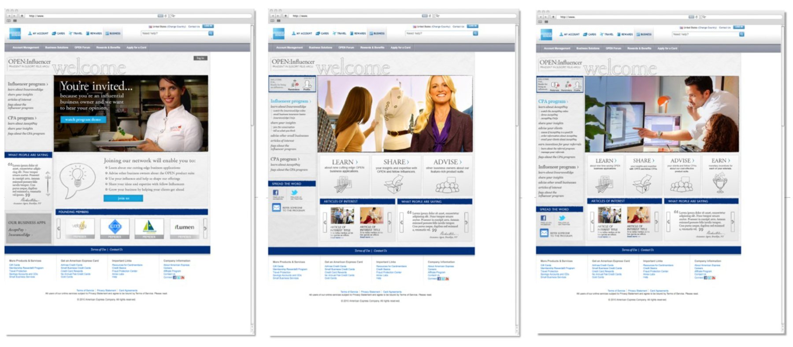

American Express OPEN
The site for American Express OPEN's FUEL influencer program, for small-business owners. Sitemap, wireframes, copy and production-ready designs in about ten weeks.
Creative productionProduct
~10weeks, sitemap to production-ready design
3teams led: design, UX and IA
5page sets: welcome, home, and three groups of subpages
1external dev shop
The problem
- American Express OPEN needed a home for its FUEL influencer program.
- Members needed a logged-in experience, with referral tools, behind a public welcome page.
What I did
- Led the internal design, UX and IA teams through the sitemap, wireframes and copy deck.
- Shaped the UX and strategy with the Momentum team.
- Was the main link between the external developers and the account team.
- Managed the client, the schedule and scope.
What changed
- Wireframes and production-ready designs in about ten weeks.
- A logged-in and logged-out site the developers could build straight from.
